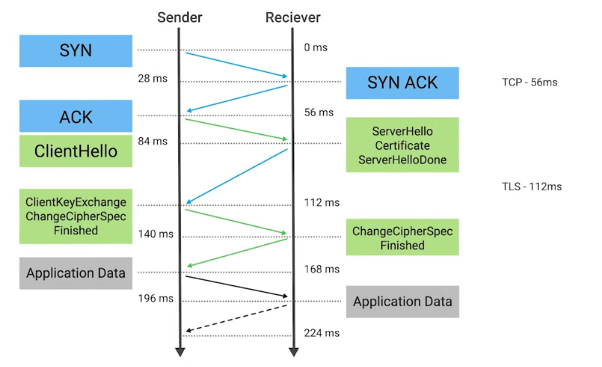

Infraestructura de clave pública
PKI es un sistema que define la creación, el almacenamiento y la distribución de certificados
digitales. Un certificado digital es un archivo que prueba que una entidad posee una determinada clave pública.
Un certificado contiene información sobre la clave pública, la entidad a la que pertenece y una firma digital de
un tercero que verificó esta información. Si la firma es válida y confiamos en la entidad que firmó el
certificado, entonces podemos confiar en el uso de la clave pública para comunicarnos con seguridad con la
entidad que la posee.
La entidad que es responsable de almacenar, emitir y firmar certificados se conoce como CA, o
autoridad de certificación. Es un componente fundamental del sistema PKI. También hay una
RA, o autoridad de registro, que es responsable de verificar las identidades
de cualquier entidad que solicite que los certificados sean firmados y almacenados por la CA. En general, este
rol se agrupa con la CA. Se necesita un repositorio central para almacenar y también indexar claves de forma
segura, y un sistema de gestión de certificados de algún tipo facilita el almacenamiento y la emisión de
certificados.
Hay algunos tipos diferentes de certificados, con diferentes aplicaciones o usos. Con el que probablemente estés
más familiarizado es el certificado de servidor SSL/TLS. Este es un certificado que un servidor
web presenta a un cliente como parte de la configuración inicial segura de una conexión SSL/TLS. El cliente, por
lo general un navegador web, verificará que el sujeto del certificado coincida con el nombre de host del
servidor al que el cliente está intentando conectarse. El cliente también verificará que el certificado esté
firmado por una autoridad de certificación en la que confíe. Es posible que un certificado sea válido para
múltiples nombres de host.
En algunos casos, puede emitirse un certificado comodín en el que se sustituye el nombre del
host con un asterisco, lo que indica validez para todos los nombres de host dentro de un dominio. También es
posible que un servidor use lo que se denomina un certificado de autofirma. Tal vez adivinaste,
a partir de su nombre, que este certificado fue firmado por la misma entidad que lo emitió. Esto sería,
básicamente, firmar tu propia clave pública usando tu clave privada. A menos que ya hayas confiado en esta
clave, este certificado no se podría verificar.
Otro tipo de certificado es un certificado de cliente SSL/TLS. Este es un componente opcional
de las conexiones SSL/TLS y se ve con menos frecuencia que los certificados de servidor. Como su nombre lo
indica, estos son certificados que están vinculados a los clientes y se usan para autenticar el cliente ante el
servidor, lo que permite el control de acceso a un servicio SSL/TLS. Estos son diferentes del certificado de
servidor, ya que los certificados de cliente no son emitidos por una CA pública. Normalmente, el operador del
servicio tendrá su propia CA interna que emite y gestiona certificados de cliente para su servicio.
También hay certificados de firma de código que se usan para firmar programas ejecutables. Esto permite a los
usuarios de estas aplicaciones firmadas verificar las firmas y asegurarse de que la aplicación no fue
manipulada. También les permite verificar que la aplicación provino del autor del software y no es un gemelo
malicioso.
PKI depende en gran medida de las relaciones de confianza entre entidades y desarrolla una red o cadena de
confianza. Esta cadena de confianza tiene que comenzar en alguna parte, y lo hace con la autoridad de
certificación raíz. Estos certificados raíz son autofirmados porque son el inicio de la cadena de confianza. No
hay autoridad superior que pueda firmar en su nombre. Esta autoridad de certificación raíz ahora puede usar el
certificado autofirmado y la clave privada asociada para comenzar a firmar otras claves públicas y a emitir
certificados. Genera una especie de estructura de árbol con la clave privada de la raíz en la parte superior de
la estructura. Si la CA raíz firma un certificado y establece un campo en el certificado
llamado CA con el valor "True" (Verdadero), esto marca al certificado como una CA intermediaria
o subordinada. Esto significa que la entidad a la que se le emitió este certificado ahora puede firmar otros
certificados. Y esta CA ostenta la misma confianza que la CA raíz. Una CA intermediaria también puede firmar a
otras CA intermedias. Puedes ver como esta extensión de confianza de una CA raíz a intermediarias puede empezar
a construir una cadena.
Un certificado que no tiene autoridad como CA se conoce como una entidad final o
certificado secundario (o de hoja). Al igual que una hoja en un árbol, es el final de la
estructura del árbol y se lo puede considerar lo opuesto a las raíces.
Para dar inicio a esta cadena de confianza, tienes que confiar en un certificado de CA raíz, de
lo contrario, nada en la cadena es de confianza. Esto se hace por distribución de certificados CA raíz a través
de canales alternativos. Cada proveedor principal de SO envía una gran cantidad de certificados CA raíz de
confianza con su sistema operativo. Y, en general, tienen sus propios programas para facilitar la distribución
de los certificados CA raíz. La mayoría de los navegadores usarán el almacén de certificados raíz provisto por
el SO.
El estándar X.509 es lo que define el formato de los certificados digitales. También define una
lista de revocación de certificados, o CRL, que es un medio para distribuir
una lista de certificados que ya no son válidos. El estándar X.509 se publicó por primera vez en 1988 y la
versión actual del estándar es la número 3. Los campos definidos en un certificado X.509 son:
• Versión: a qué versión del certificado X.509 estándar se adhiere.
• Número de serie: un identificador único para su certificado, asignado por la CA, lo que permite a la CA
identificar y gestionar certificados individuales.
• Algoritmo de firma de certificado: este campo indica cuál es el algoritmo de clave pública que se usa para la
clave pública y qué algoritmo de hash se usa para firmar el certificado.
• Nombre del emisor: este campo contiene información sobre la autoridad que firmó el certificado.
• Validez: esto contiene dos campos secundarios, "Válido desde" y "Válido hasta", que definen las fechas de
validez del certificado.
• Sujeto: este campo contiene información que identifica a la entidad a la que se le emitió el certificado.
• Información de clave pública del sujeto: estos dos campos secundarios definen el algoritmo de la clave pública
junto con la propia clave pública.
• Algoritmo de firma de certificado: igual que el campo Información de clave pública del título, estos dos
campos deben coincidir.
• Valor de la firma del certificado: los datos de la firma digital en sí.
También hay huellas digitales del certificado que en realidad no son campos en el certificado en sí, pero son
computadas por los clientes al validar o inspeccionar certificados. Son sólo resúmenes de hash de todo el
certificado.
https://www.ietf.org/rfc/rfc5280.txt
Una alternativa al modelo PKI centralizado de establecimiento de confianza y vinculación de identidades es lo
que conoce como red de confianza. Una red de confianza es cuando los individuos, en lugar de
las autoridades de certificación, firman las claves públicas de otras personas. Antes de que un individuo firme
una clave, primero debe verificar la identidad de la persona a través de un mecanismo acordado. Por lo general,
mediante verificación de algún tipo de identificación, licencia de conducir, pasaporte, etc. Una vez que se
determina que la persona es quien dice ser, firmar su clave pública es básicamente responder por ella. Estás
diciendo que confías en que esta clave pública pertenece a este individuo. Este proceso sería recíproco, es
decir, ambas partes firmarían las claves del otro. En general, las personas que están interesadas en establecer
una red de confianza organizarán lo que se llaman eventos de firma de claves, en los que los participantes
realizan el mismo tipo de verificación y firmado. Al final del evento, todas las claves públicas deben haber
sido firmadas por los demás participantes, lo que establece una red de confianza. En el futuro, cuando uno de
estos participantes del evento de firma inicial de claves establezca confianza con un nuevo miembro, la red de
confianza se amplía para incluir a este nuevo miembro y los demás individuos también confían. Esto permite que
diferentes redes de confianza sean unidas por individuos y permite que la red de confianza crezca.
Criptografía en acción
HTTPS es la versión segura de HTTP, el Protocolo de transferencia de hipertexto. HTTPS también
se puede llamar HTTP sobre SSL/TLS, ya que básicamente encapsula el tráfico HTTP en un canal seguro encriptado,
y para ello usa SSL o TLS. Tal vez escuches que SSL y TLS se usan indistintamente, pero SSL 3.0, la última
revisión de SSL, cayó en desuso en 2015, y TLS 1.2 es la actual revisión recomendada, y la versión 1.3 todavía
está en proceso. Ahora, es importante señalar que TLS es, en realidad, independiente de HTTPS, y es un protocolo
genérico para permitir comunicaciones seguras y autenticación a través de una red. TLS también
se usa para proteger otras comunicaciones aparte de la navegación web, como llamadas VoIP —como Skype o
Hangouts—, correo electrónico, mensajería instantánea y hasta la seguridad de la red Wi-Fi.
TLS nos concede tres cosas.
• Uno, una línea de comunicación segura, lo que significa que los datos que se transmiten están protegidos de
potenciales intrusos.
• Dos, la posibilidad de que ambas partes de la comunicación se autentiquen, aunque por lo general solo el
servidor es autenticado por el cliente.
• Y tres, la integridad de las comunicaciones, lo que significa que hay verificaciones para asegurar que los
mensajes no se pierdan ni alteren durante el tránsito.
TLS básicamente proporciona un canal seguro para que una aplicación se comunique con un servicio, pero debe
haber un mecanismo que establezca este canal inicialmente. A esto se lo conoce como protocolo de enlace TLS.

• El proceso del protocolo de enlace comienza con un cliente que establece una conexión con un servicio TLS
habilitado, al que en el protocolo se lo denomina ClientHello. Esto incluye información sobre el cliente, como
la versión del TLS que admite, una lista de conjuntos de cifrado que admite y tal vez algunas opciones de TLS
adicionales.
• El servidor entonces responde con un mensaje ServerHello, en el que selecciona la versión más alta del
protocolo que tenga en común con el cliente y elige un conjunto de cifrado de la lista para usar. También
transmite su certificado digital y un mensaje final ServerHelloDone.
• El cliente entonces validará el certificado que el servidor envió para garantizar que es de confianza y que
está dirigido al nombre de host apropiado. Suponiendo que el certificado se verifica, el cliente entonces envía
un mensaje ClientKeyExchange. Esto es cuando el cliente elige un mecanismo de intercambio de claves para
establecer de forma segura un secreto compartido con el servidor, el que se usará con un cifrado de encriptación
simétrica para encriptar todas las comunicaciones posteriores. El cliente también envía un mensaje
ChangeCipherSpec que indica que está cambiando a comunicaciones seguras ahora que tiene toda la información
necesaria para comenzar a comunicarse por el canal seguro. A esto le sigue un mensaje Finished encriptado que
también sirve para verificar que el protocolo de enlace se completó con éxito.
• El servidor responde con un mensaje ChangeCipherSpec y un mensaje Finished encriptado una vez que se recibe el
secreto compartido.
Una vez completado, los datos de la aplicación pueden comenzar a circular por el canal ahora asegurado.
La clave de sesión es la clave de encriptación simétrica compartida usada en las sesiones TLS para encriptar los
datos que se envían y reciben. Dado que esta clave se obtiene a partir de la clave pública-privada, si la clave
privada se pone en riesgo, hay potencial para que un atacante decodifique todos los mensajes previamente
transmitidos que se codificaron usando claves derivadas de esta clave privada. Para defenderse contra esto,
existe un concepto de "secreto hacia adelante". Esta es una propiedad de un sistema criptográfico para que,
incluso en el evento que la clave privada se ponga en riesgo, las claves de la sesión siguen siendo seguras.
SSH, o Secure Shell, es un protocolo de red segura que usa la encriptación
para permitir el acceso a un servicio de red a través de redes no seguras. Más comúnmente, verás el uso de SSH
para acceso remoto a los sistemas basados en línea de comando, pero el protocolo es súper flexible y tiene
disposiciones para permitir que redes y tráfico arbitrario sobre esos puertos se tunelicen a través del canal
encriptado. Se lo diseñó originalmente como un reemplazo seguro del protocolo Telnet y de otros protocolos de
shell de acceso remoto no seguro como rlogin o r-exec. Es muy importante que los protocolos de acceso remoto y
de shell usen encriptación. De lo contrario, estos servicios estarán transmitiendo nombres de usuario y
contraseñas, junto con las pulsaciones de teclado y la salida del terminal, en texto sin formato. Esto abre la
posibilidad de que un entrometido intercepte credenciales y pulsaciones de teclas, nada bueno.
SSH usa criptografía de clave pública para autenticar la máquina remota a la que el cliente se está conectando y
tiene disposiciones para permitir la autenticación del usuario a través de certificados de cliente, si lo desea.
El protocolo SSH es muy flexible y modular y admite una amplia variedad de mecanismos de intercambio de claves
diferentes como Diffie-Hellman, junto con una variedad de cifrados de encriptación simétrica. También admite
diversos métodos de autenticación, entre ellos, métodos personalizados que puedes escribir. Al usar
autenticación de clave pública, el usuario que quiere autenticarse genera un par de claves públicas. Luego debe
distribuir esas claves públicas a todos los sistemas ante los que quiera autenticar usando el par de claves. Al
autenticarse, SSH garantizará que la clave pública presentada coincida con la clave privada, la que nunca debe
estar fuera de la posesión del usuario.
PGP significa Pretty Good Privacy, es una aplicación de encriptación que
permite la autenticación de datos junto con la privacidad de terceros, y depende de la encriptación asimétrica
para lograrlo. Su uso más común es en comunicación por correo electrónico encriptada, pero también está
disponible como una solución completa de cifrado de disco o para encriptar archivos, carpetas o documentos
arbitrarios. PGP fue desarrollado por Phil Zimmerman en 1991 y estaba disponible gratuitamente para que todos lo
usaran. PGP fue diseñado para usar claves no menores que 128 bits. PGP se considera ampliamente como muy seguro,
sin mecanismos conocidos para vulnerar la encriptación por medios criptográficos o informáticos. Se lo comparó
con la encriptación de grado militar y hay numerosos casos en que la policía y el gobierno no fueron capaces de
recuperar datos protegidos mediante encriptación PGP.
http://www.philzimmermann.com/EN/essays/WhyIWrotePGP.html
Asegurar el tráfico de red
¿Y si queremos brindarle acceso remoto a recursos internos demasiado sensibles para exponerlos directamente a
Internet? Usamos una solución VPN, o red privada virtual. Una VPN es un mecanismo que te permite conectar de
forma remota un host o una red a una red privada interna y transmitir datos a través de un canal público como
Internet. Puedes pensar en esto como una especie de túnel cifrado donde todo el tráfico de red de nuestro
sistema remoto fluiría canalizando de forma transparente nuestros paquetes por medio del túnel a través de la
red privada remota.
Una VPN también puede ser punto a punto, donde dos puertas de enlace se conectan a través de una VPN uniendo
básicamente dos redes privadas a través de un túnel encriptado.
IPsec, o Protocolo de seguridad de Internet, es un protocolo VPN que se diseñó
junto con IPv6. Originalmente se requería que fueran estándares compatibles con implementaciones de IPv6, pero
ese requisito fue descartado a la larga. Su uso con IPv6 es opcional. IPsec funciona encriptando un paquete IP y
encapsulando el paquete encriptado dentro de un paquete IPsec. Luego, este paquete encriptado se enruta al
terminal VPN, donde se lo desencapsula y desencripta, luego se lo envía al destino final.
IPsec admite dos modos de operaciones, el modo de transporte y el modo túnel. Cuando se usa el modo de
transporte, solo la carga útil del paquete IP está encriptada, lo que deja intactos los encabezados IP. Aviso:
también se usan encabezados de autenticación. A los valores de encabezado se les aplica hash y se los verifica
junto con las capas de transporte y aplicación. Esto evitaría el uso de cualquier cosa que modifique estos
valores, como NAT o PAT. En el modo túnel, todo el paquete IP, el encabezado, la carga útil, etc., está
encriptado y encapsulado dentro de un nuevo paquete IP con nuevos encabezados.
Si bien no es una solución VPN en sí misma, L2TP, o Protocolo de túnel de capa
2, se usa en general para admitir VPN. Una implementación común de L2TP es en conjunto con IPsec cuando
se necesitan datos de forma confidencial, ya que L2TP no proporciona encriptación por sí mismo. Es un protocolo
de tunelización simple que permite encapsular diferentes protocolos o tráfico a través de una red que no puede
admitir el tipo de tráfico que se está enviando. L2TP también puede segregar y gestionar el tráfico. Los ISP
utilizarán L2TP para brindar acceso de red al terminal de un cliente, por ejemplo. La combinación de L2TP con
IPsec se conoce como L2TP/IPsec y se estandarizó oficialmente en el RFC 3193 de IETF (Internet Engineering Task
Force).
El establecimiento de una conexión L2TP/IPsec funciona negociando, en primer lugar, una asociación de seguridad
IPsec que, a la vez, negocia los detalles de la conexión segura, incluido el intercambio de claves si se lo
utiliza. También puede compartir secretos, claves públicas y una serie de otros mecanismos. A continuación, se
establece una comunicación segura mediante Encapsulating Security Payload. Es una parte del conjunto de
protocolos IPsec que encapsulan paquetes IP, lo que proporciona confidencialidad, integridad y autenticación de
paquetes. Una vez establecida la encapsulación segura, se puede proceder con la negociación y el establecimiento
del túnel L2TP. Los paquetes L2TP ahora se encapsulan mediante IPsec, lo que protege la información sobre la red
interna privada.
Una distinción importante para hacer en esta configuración es la diferencia entre túnel y canal seguro. El túnel
es proporcionado por L2TP, lo que permite el pasaje de paquetes sin modificar de una red a otra. El canal
seguro, por otro lado, es proporcionado por IPsec, lo que aporta confidencialidad, integridad y autenticación de
los datos que se transmiten. SSL/TLS también se usa en algunas implementaciones VPN para proteger el tráfico de
red, a diferencia de las sesiones o conexiones individuales.
https://tools.ietf.org/html/rfc3193
Un ejemplo de esto es OpenVPN, que usa la biblioteca OpenSSL para manejar el intercambio de
claves y la encriptación de datos, junto con canales de control. Esto también permite a OpenVPN hacer uso de
todos los cifrados implementados por la librería OpenSSL. Los métodos de autenticación admitidos son secretos
pre compartidos, autenticación basada en certificados, y nombre de usuario/contraseña. La autenticación basada
en certificados sería la opción más segura, pero requiere más sobrecarga de soporte y gastos dado que cada
cliente debe tener un certificado. La autenticación de nombre de usuario y contraseña puede usarse junto con la
autenticación por certificado, lo que ofrece capas adicionales de seguridad. Hay que señalar que OpenVPN no
implementa autenticación por nombre de usuario/contraseña directamente. Utiliza módulos que se conectan a los
sistemas de autenticación.
OpenVPN puede operar sobre TCP o UDP, típicamente sobre el puerto 1194. Es compatible con actualización externa
(push) de opciones de configuración de red de servidor a cliente y admite dos interfaces para redes. Puede
depender de un túnel de capa 3 o un TAP de Ethernet de capa 2. El TAP de Ethernet es más flexible, lo que le
permite transportar una gama más amplia de tráfico. Desde la perspectiva de la seguridad, OpenVPN admite
encriptación de hasta 256 bits a través de la librería OpenSSL. También se ejecuta en el espacio de usuario, lo
que limita la seriedad del potencial de vulnerabilidades que pueden estar presentes.
https://openvpn.net/community/
Hardware criptográfico
Otra aplicación interesante de los conceptos de criptografía es el módulo de plataforma
confiable, o TPM. Es un dispositivo de hardware, normalmente integrado en el hardware
de una computadora, que es un procesador criptográfico especializado. TPM ofrece generación segura de claves,
generación de números aleatorios, certificación remota y vinculación y sellado de datos. Un TPM tiene una
clave RSA secreta única, grabada en el hardware en el momento de la fabricación, que le permite realizar cosas
como la autenticación de hardware. Esto puede detectar cambios de hardware no autorizados en un sistema.
La certificación remota es la idea de un sistema que autentica su propia configuración de
software y hardware ante un sistema remoto. Esto permite que el sistema remoto determine la integridad del
sistema remoto. Esto se puede hacer con un TPM mediante generación de un hash seguro de la configuración del
sistema usando la clave RSA única incorporada en el propio TPM.
Otro uso de esta clave de encriptación respaldada por hardware secreto es la vinculación y el sellado de
datos. Implica usar la clave secreta para obtener una clave única que luego se utiliza para la
encriptación de datos. Básicamente, esto vincula los datos encriptados al TPM y, por extensión, al sistema en el
que está instalado el TPM, ya que solo las claves almacenadas en el hardware en el TPM podrán desencriptar los
datos.
El sellado de datos es similar a la vinculación, ya que los datos se encriptan usando la clave
de encriptación respaldada por hardware. Pero para que los datos puedan desencriptarse, el TPM debe estar en un
estado especificado.
TPM es un estándar con varias revisiones que se puede implementar como un chip de hardware discreto, integrado
en otro chip en un sistema, implementado en software de firmware o virtualizado en un hipervisor. La
implementación más segura es el chip discreto, ya que estos paquetes de chips también incorporan resistencia a
la manipulación física para evitar ataques físicos en el chip. Los dispositivos móviles tienen algo similar
conocido como elemento seguro. Del mismo modo que un TPM, es un chip resistente a la
manipulación a menudo incorporado en el microprocesador o integrado en la placa base de un dispositivo móvil.
Suministra almacenamiento seguro de claves criptográficas y proporciona un entorno seguro para las
aplicaciones.
Una evolución respecto de los elementos seguros es el entorno de ejecución confiable, o
TEE, que lleva el concepto un poco más lejos. Ofrece un entorno de ejecución aislado avanzado
que se ejecuta junto con el SO principal. Esto proporciona aislamiento de las aplicaciones respecto del SO
principal y otras aplicaciones instaladas allí. También aísla los procesos seguros entre sí cuando se ejecutan
en el TEE.
Los TPM han sido criticados por confiar en el fabricante. Dado que la clave secreta se graba en el hardware en
el momento de la fabricación, el fabricante tendría acceso a esta clave en ese momento. Es posible que el
fabricante almacene las claves que luego podrían usarse para duplicar un TPM, lo que podría vulnerar la
seguridad que el módulo debe proporcionar.
Los TPM se utilizan más comúnmente para garantizar la integridad de la plataforma, impedir cambios no
autorizados en el sistema, ya sea en software o hardware, y para encriptación completa del disco usando el TPM
para proteger todo el contenido del disco. La encriptación completa de disco, o
FDE, como puede deducirse por su nombre en inglés, es la práctica de encriptar toda la unidad
en el sistema. No solo los archivos sensibles en el sistema. Esto nos permite proteger todo el contenido del
disco contra robos o manipulación de datos. Ahora, hay un montón de opciones para implementar FDE, como el
producto comercial PGP, Bitlocker de Microsoft, que se integra muy bien con los TPM, Filevault 2 de Apple, y el
software de código abierto dm-crypt que proporciona encriptación para sistemas Linux.
Una configuración FDE tendrá una partición o partición lógica que contenga los datos a encriptar. Normalmente,
el volumen raíz, donde está instalado el SO. Pero para poder dar inicio al volumen, primero debe estar
desbloqueado en el momento del arranque. Dado que el volumen está encriptado, el BIOS no puede acceder a los
datos en este volumen a efectos de inicio. Es por esto que las configuraciones FDE tendrán una pequeña partición
de inicio sin encriptar que contiene elementos como el kernel, el cargador de arranque y un netRD. En el momento
del arranque, estos elementos se cargan y al usuario se le solicita que ingrese una frase de contraseña
para desbloquear el disco y continuar el proceso. FDE también puede incorporar el TPM, usando las claves de
cifrado TPM para proteger el disco. Y tiene integridad de plataforma para impedir el desbloqueo del disco si se
modifica la configuración del sistema. Esto protege contra ataques como la manipulación de hardware y el robo o
clonación de discos.
La selección de números aleatorios es un concepto muy importante en encriptación porque si tu
proceso de selección de números no es verdaderamente aleatorio, entonces puede haber algún tipo de patrón que un
adversario puede descubrir a través de la observación directa y el análisis de mensajes encriptados a lo largo
del tiempo. A algo que no es verdaderamente aleatorio se lo conoce como pseudoaleatorio. Es por esta razón que
los sistemas operativos mantienen lo que se conoce como un grupo de entropía. Esto es esencialmente una fuente
de datos aleatorios que permiten iniciar generadores de números aleatorios. También hay generadores de
números aleatorios y pseudoaleatorios especializados que se pueden incorporar en un dispositivo o servidor de
seguridad para asegurarse de que se seleccionen números verdaderamente aleatorios al generar claves
criptográficas.
 Índice
Índice